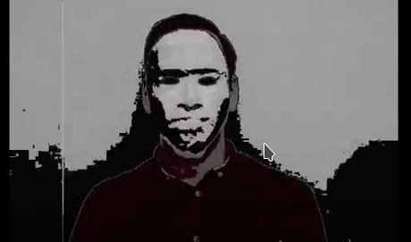

Primer capítulo: Begin
Este día se nos dió a conocer la actividad a realizar, debo decir que la forma en que esta fue presentada fue muy diferente a la forma en que habitualmente éstas se nos presentan.
Resulta que a pesar de que este día conocimos acerca de la actividad, ésta comenzó algunos días atrás ya que como grupo habíamos recibido en el correo institucional un mensaje un poco confuso, ya que este mencionaba que por motivos externos el laboratorio semanal sería realizado de forma ex-aula. Cabe mencionar que éste decía que "los instructores están preocupados y evitaron dar más información".
Para iniciar la actividad nos mostraron un vídeo en el que aparecía una persona, Ale Rav, con su rostro cubierto, él mencionaba que según el reglamento institucional, si ocurre algún tipo de desastre todos los estudiantes recibirán su titulación inmediata. La actividad consistía en encontrar al atacante antes del 5to día.
En el 1er día, se nos proporciono de un código QR, para utilizar un mayor nivel de encriptación para con la persona (auto denominada Kurt) y asi evitar que el atacante descubria los planes para evitar que atacará y asi lograr deternerlo.
Debo mencionar que hasta ese momento estaba un poco escéptico acerca de la actividad ya que me parecía extraña, si se compara con otras realizadas. Aunque la forma de descubrir pistas, obtener información y lograr obtener el pase para el siguiente día hacía parecer una busqueda real ya que como primer ejercicio se debía buscar que los duis ingresados en una tabla cumplieran todos los requisitos.